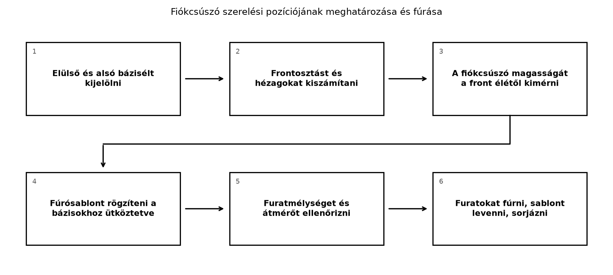

Képzeld el: a konyhaszekrény korpusza elkészült, az ajtók és a fiókok méretre vannak vágva. A vasalatok doboza mellett ott a szerelési rajz, de a furatok helyét nem a rajz diktálja egyetlen vonallal: azt a megmunkálást végzőnek kell bázisokról kimérnie. Ha a jobb oldali fiókcsúszó-furatokat csak 3 mm-rel lejjebb fúrod, a fiók nem csúszik vízszintesen. Ha a mosogató kivágását a munkalap rossz oldalán jelölöd, a laminált felső él kiszakad. Ezért ebben az alfejezetben a szerelés előtti pozicionálást, jelölést és beállítást tanuljuk meg.
Képzelj el egy 600 mm széles, 720 mm magas konyhai alsószekrényt. Elölnézetből a 600 mm magas fióknyílásban három egyforma fiókfrontot látsz: mindegyik 196 mm magas, közöttük és a nyílás szélein 3 mm-es hézag (3·196 + 4·3 = 600). A korpusz jobb oldallapján a fúrósablon az elülső élhez ütközik, és az alsó bázistól pontosan kimért furatközepek jelölik a fiókcsúszók helyét. A munkalap hátoldalán a mosogatótálca sablonja van leragasztva, a kivágási kontúr körbe rajzolva. A feladat ugyanaz mindenütt: ugyanazt a nullpontot használni, és a megmunkálást oda tenni, ahová a vasalat illeszkedni fog.

Definíció. A pozicionálás a megmunkálás – furat, fészek, kivágás, nút – helyének meghatározása és rögzítése a munkadarab meghatározott éléhez vagy lapjához viszonyítva.
Definíció. A bázisél az az él, amelytől a jelölést mérjük. A faipari gyakorlatban leggyakrabban az elülső él és az alsó él a bázis, mert ezek láthatóak, és innen számítjuk a vasalatok illeszkedését.
Definíció. A nullpont a két bázisél metszéspontja. A szerelési rajzon ez általában a korpusz oldallapjának elülső alsó sarka. Minden furat helyét innen kell érteni, kivéve, ha a rajz mást mond.
Szabály. A pozicionáláshoz mindig ugyanazt a bázist használd. Ha a bal oldalt az elülső éltől méred, a jobb oldalt is onnan mérd, tükörképben. Ha a bázisél sérült vagy sorjás, előbb tisztítsd meg, mert a hiba minden furatban megjelenik.
A gyakorlatban ritkán jelölsz minden furatot egyesével mérőszalaggal. A vasalatgyártók jelölősablont vagy fúrósablont adnak: ez egy furatokkal ellátott lap vagy idom, amelyet a bázisélhez ütköztetve a fúró mindig ugyanoda kerül. A fúrósablon furataiban cserélhető acélpersely van, ez vezeti a fúrót, és megvédi a sablon anyagát.
Figyelem. A fúrósablont fúrás közben mindig rögzítsd befogóval vagy csavarral. Kézzel tartani tilos: ha a fúró megszorul, a sablon elfordul, és a furat elcsúszik.
Az ábra (a) része a 720 mm magas, 560 mm mély jobb oldallapot mutatja elölnézetben: balra az elülső, alul az alsó bázisél (vastag vonal), metszéspontjukban a nullpont; a 37 mm-es szerelővonalon ülnek a csúszófuratok, a szaggatott vonalak a három front éleit jelölik (3/199, 202/398, 401/597 mm). A (b) metszet a rögzített fúrósablont mutatja: a 18 mm-es laminált forgácslapon fekvő sablont az elülső élhez ütköztetjük és szorítóval rögzítjük, az acélpersely vezeti a fúrót, a mélységütköző 12 mm-nél megállítja. A HTML-kiadásban a nyílásmagasság, a frontszám és a hézag csúszkával állítható, a kalkulátor kiírja a frontmagasságot, az élmagasságokat és a pántfészek távolságát.
A fiókok frontját nem önállóan jelöljük ki, hanem a korpusz belső nyílásmagasságából számoljuk. A fiókok homlokzatai között hézag van, mert a fa és a lapanyag mozog, és a fiók kinyitásakor a front nem súrlódhat a szomszédos fronthoz.
Összefüggés. Ha a nyílásmagasság , a fiókfrontok száma , és minden hézag egyenlő , akkor a frontmagasság:
Az hézag abból adódik, hogy a frontok alatt, fölött és egymás között is hézagot hagyunk.
Számítás. Adott: , , . Keresett: .
Ellenőrzés: . Tehát a három front egyenként 196 mm magas lesz.
A frontok alsó és felső éleinek helye a korpusz alsó bázisától:
| Front sorszáma | Alsó él (mm) | Felső él (mm) | Megjegyzés |
|---|---|---|---|
| 1. (legalsó) | 3 | 199 | alsó hézag 3 mm |
| 2. | 202 | 398 | középső |
| 3. (legfelső) | 401 | 597 | felső hézag 3 mm |
A fiókcsúszó (rejtett futósín) elülső szerelőfuratát a korpusz oldallapján a front alsó éléhez viszonyítva jelöljük ki. A gyakorlati beállítás gyártónként változik: jellemzően az elülső szerelőfurat a korpusz elülső élétől 37 mm-re van, a további furatok pedig 32 mm-es raszterre igazodnak (ellenőrizendő: vasalatgyártói szerelési útmutató). A fúrósablont az elülső élhez ütközteted, így a 37 mm minden oldallapon azonos lesz.
Szabály. A fiókcsúszó furatait ne a fiókfront közepéből mérd, hanem a front alsó élétől lefelé a gyártó által megadott méretre. A fúrósablon függőleges ütközőjét mindig ugyanarra a frontélre támaszd.
A csészés pánt fészkét az ajtó oldalsó élétől és a felső/alsó éltől is meg kell adni. A fészek átmérője a gyakori bútorpántnál 35 mm, a fészek mélysége általában 11–12,5 mm (ellenőrizendő: pántgyártói adat).
Számítás. Ha a pántfészek széle és az ajtó él között felfekvést hagyunk, akkor a fészek középpontjának távolsága az ajtó élétől:
A magassági osztásnál a szélső pántokat az ajtó felső és alsó élétől 100–150 mm-re tesszük, a közbensőket egyenletesen osztjuk el. Például 720 mm magas ajtón három pántnál: a felső fészek középpontja 100 mm-re, az alsó 100 mm-re a megfelelő éltől, a középső a kettő közötti szakasz közepén, 360 mm-re az ajtó felső élétől. A pántok számát az ajtó tömegéből és magasságából választjuk, ahogyan a vasalatokkal foglalkozó alfejezetben tanultuk.
Figyelem. Az ajtó bal és jobb oldala tükörképben azonos. A pántcsésze fészke az ajtón, a szerelőtalp csavarhelyei a korpusz oldallapján, a 37 mm-es szerelővonalon (32 mm-es raszterben) készülnek. A fészek fúrásához 35 mm-es fészekfúrót és fúróállványt használj.
Az idegencsap – köldökcsap, tipli vagy lamelló – akkor illeszkedik, ha a furatok párosan, azonos nullpontból készülnek. A csap helyét az alkatrész élén a bázisélhez képest jelöljük ki.
Szabály. Idegencsapos szerkezetnél a szélső csapot a toldandó él végétől 40–60 mm-re tedd, a közbenső csapokat 100–150 mm-enként oszd el. A furat átmérője egyezzen a csap átmérőjével, a furat mélysége pedig a csap hosszának felénél 1–2 mm-rel legyen nagyobb, hogy a ragasztófelesleg elférjen.
Például egy 600 mm hosszú asztallap-szélesítésnél 10 mm-es köldökcsap esetén: az első csap 60 mm-re, a többi 120 mm-enként, így 5 csap kell. A fúrósablon ütközője a munkadarab elülső oldalára támaszkodik, a fúrási mélység pedig mélységütközővel 16 mm, ha a csap hossza 30 mm.
A fakötések előkészítése ugyanezt a logikát követi: az ollós csap fogosztását a rajz méretei szerint a vállvonaltól induló szögmérővel jelöljük, a fészek helyét pedig a csaphoz igazítjuk. A jelölésnél a bázis a tiszta, derékszögben levágott alkatrészélé.
A munkalapba süllyesztett mosogatótálcát vagy főzőlapot mindig a munkalap hátoldalán jelöljük. Így a fűrészlap felfelé vág, és a látható laminált oldal nem szakad ki. A gyártó által adott sablon a kivágás pontos méretét és a peremek felfekvését biztosítja.
Példa. Egy mosogatótálca külső pereme 860 × 500 mm. Ha a gyártói sablon szerint a felfekvő perem szélessége 12 mm, akkor a kivágás mérete:
Ezt a méretet a sablon ellenőrzésére használjuk, de a gyártói sablon mértékadó (ellenőrizendő: termék műszaki adatlapja).
Technológiai lépések mosogatótálca-kivágáshoz:
A 3. képen látszik, miért a hátoldalon jelölünk: a szúrófűrész foga felfelé vág, így a kitörés a felső (hát)oldalra esik, a lefelé fordított laminált oldal ép marad.
Gépbiztonság. A fúrógépet és a szúrófűrészt csak betanított, felügyelt tanuló kezelheti; védőberendezés nélkül soha ne dolgozz. A szúrófűrészt két kézzel fogd, a vágásvonal mellett tartsd szabadon a munkadarabot, és a kivágott darabot ne feszítsd. Használj védőszemüveget, fülvédőt, és a csiszoláshoz, fúráshoz elszívást vagy légzésvédőt; a keletkező por keményfa- vagy lapanyagpor is lehet.
Tilos. A kivágást a munkalap felső, látható oldalán jelölni szúrófűrésszel, mert a felfelé vágó fűrészlap kiszakítja a laminált felületet. Tilos a fúrósablont kézzel tartani.
Ez a recept a gyakorlatban használható, mielőtt bármilyen furatot fúrunk:
Cél: fiókcsúszó-furatok és pántcsésze-fészkek pozicionálása, fúrása korpuszoldalba és ajtóba.
Anyagok: 18 mm-es laminált forgácslap korpuszoldal, 720 mm magas ajtófront, fúrósablon, vasalatgyártói szerelési rajz.
Szerszámok, gépek: állványos fúrógép, fészekfúró , csigafúró , mélységütköző, befogó/gyorsszorító, mérőszalag, derékszögelő, próbadarab.
Gépbiztonság. A művelet betanított, felügyelt tanulónak szól; védőberendezés nélkül, egyedül, fáradtan ne végezd. A fúrógép védőburkolata, a fúróasztal ütközője és az elszívás legyen a helyén. Használj védőszemüveget. A hosszú hajat fogd össze, sapka alá tűrd; bő, lógó ruhát, ékszert, sálat ne viselj; forgó fúró közelében kesztyűt ne viselj. A fúró forgása közben a darabot befogóval rögzítsd, ne kézzel.
Indítás előtti ellenőrzés: fúró rögzítve, fordulatszám megfelelő, mélységütköző beállítva, a fúróasztal tiszta, a vészleálló elérhető.
Lépések:
Dokumentálás: munkanaplóba írd fel a beállított mélységet, a furatátmérőt és az ellenőrzött próbadarab eredményét.
A pozicionálásnál a legfontosabb, hogy párosan ugyanoda kerüljenek a furatok. Mérőszalaggal ellenőrizd a furatközép távolságát a bázistól, tűrése jellemzően (tájékoztató). A fészekmélységet tolómérővel vagy a vasalat próbaillesztésével ellenőrizd. A fiókcsúszó próbadarabján a sínnek vízszintesen kell feküdnie, a fióknak pedig beépítés után könnyen, egyenletesen kell futnia. A mosogatókivágásnál nézd meg, hogy a tálca felfekvése körben legalább 10–12 mm legyen, és a vágott él zárt, tömített legyen.
Hiba: a fiók a jobb oldalon lejt, vagy a korpuszhoz súrlódik. Ok: a jobb oldali fúrósablont nem ugyanarra a bázisélre ütköztették, mint a balt. Helyes gyakorlat: mindkét oldalt ugyanabból a nullpontból, tükörképben fúrd.
Hiba: a fúrósablon fúrás közben elfordul, a furatok nem illeszkednek. Ok: a sablont nem rögzítették, vagy a fúró megszorult. Helyes gyakorlat: befogóval rögzíts, és ellenőrizd a fúró élességét.
Hiba: a pántfészek túl közel van az ajtó széléhez, a csavarhely kiszakad. Ok: a helyett 15 mm-re mérték a középpontot, vagy a sablon nélkül jelöltek. Helyes gyakorlat: a fészekfúrót mindig ütközővel vagy fúróállvánnyal vezesd.
Hiba: a mosogatótálca kivágása szélesebb, mint a felfekvő perem. Ok: a sablon kontúrját a külső vonalon vágták, vagy a szúrófűrész lassú előtolással, eltérve a vonaltól haladt. Helyes gyakorlat: a kontúron belül vágj, majd csiszold pontosra, és a tálcával próbáld be.
Egy beépített konyhabútor szerelésekor a három fiók közül a felső a bal oldalán feljebb futott, ezért lejtett. A reklamációban a szerelő a fiókcsúszó furatait vizsgálta: a bal oldali elülső furat az alsó bázistól 203 mm-re, a jobb oldali 199 mm-re volt. Kiderült, hogy a bal oldali fúrósablon alsó ütközője alá egy kis forgács szorult, ezért a sablon följebb ült. A furatokat köldökcsappal betömték, újrafúrták, és a fiók futása helyreállt. Tanulság: a bázisfelületeket minden fúrás előtt meg kell tisztítani, és a sablon ütközését vizuálisan ellenőrizni kell.
1. feladat (A) Határozd meg a bázisél, nullpont és fúrósablon fogalmát a saját szavaiddal.
2. feladat (A) Számítsd ki a fiókfront magasságát, ha a korpusz belső nyílásmagassága 700 mm, a fiókfrontok száma 4, és a hézag mindenütt 3 mm. Ellenőrizd az eredményt összegzéssel.
3. feladat (B) Egy 35 mm-es csészefészkű pántot szerelsz. A fészek széle és az ajtó éle között 4 mm felfekvést hagysz. Számítsd ki a fészek középpontjának távolságát az ajtó élétől. A fészek mélysége 11 mm; írd le, milyen fúrót és beállítást használsz.
4. feladat (B) Írd le szövegesen egy korpusz oldallapjának fúrási rajzát fiókcsúszóhoz: milyen nézetek, metszetek, méretek és furatjelek szerepeljenek rajta?
5. feladat (C) A fiók bal oldala elöl 4 mm-rel feljebb van, mint a jobb oldala. Sorold fel a lehetséges okokat, és add meg a vizsgálat lépéseit.
6. feladat (D) Tanműhelyi gyakorlat: készítsd el egy mosogatótálca kivágásának jelölését és ellenőrzését egy munkalapon. Írd le a sablon rögzítését, a kezdőfuratokat, a szúrófűrész használatát, az élvédelmet és a biztonsági szabályokat.
Önellenőrzés – válaszok
1. feladat (A)
A bázisél az a tiszta, pontos él, amelytől a megmunkálás helyét mérjük.
A nullpont a két bázisél metszéspontja. A fúrósablon olyan furatokkal
ellátott segédeszköz, amelyet a bázisokhoz ütköztetve a fúró mindig
azonos helyre kerül.
2. feladat (A)
Képlet:
.
Ellenőrzés:
.
A front magassága 171,25 mm.
3. feladat (B)
.
A fészekfúró átmérője 35 mm, a mélységütközőt 11 mm-re állítjuk,
fúróállványt használunk. A fészekközép az ajtó élétől 21,5 mm
legyen.
4. feladat (B)
A rajz elölnézetben mutatja a korpusz oldallapját, az elülső élt balra.
Az alsó él az alsó bázis, az elülső él az elülső bázis. Jelölni kell a
37 mm-es szerelővonalat, a front alsó élének magasságát, a fúrósablon
furatközeit kereszttel, a furatátmérőt és a fúrási mélységet. A metszet
a sablon perselyét, a fúrót és a mélységütközőt mutassa.
5. feladat (C)
Lehetséges okok: a bal oldali elülső furat magasabbra került (vagy a
jobb oldali alacsonyabbra), mert a fúrósablon nem ütközött az alsó
bázishoz; a bal oldali sablon alsó ütközője alá forgács került; a
bázisfelületet nem tisztították meg; a fúrósablon elmozdult. Vizsgálat:
mérd vissza a fúrósablon ütközését, hasonlítsd össze a furatok
magasságát a front alsó élétől, próbadarabon ellenőrizd a fúrást.
6. feladat (D)
A munkalapot hátoldalával felfelé fekteted. A gyártói sablont a munkalap
hátoldalára ragasztószalaggal rögzíted, ügyelve a középvonalra és az
elülső éltől mért távolságra. A kontúrt körberajzolod, a sarkokba 8–10
mm-es kezdőfuratot fúrsz. A szúrófűrészt két kézzel, a kontúron belül
vezeted, a kivágott darabot nem feszíted. A vágás után csiszolod az élt,
majd élvédővel vagy tömítőszalaggal lezárod. Biztonsági szabályok:
védőszemüveg, fülvédő, elszívás, a munkadarab megtámasztása.
A szereléshez szükséges megmunkálások akkor illeszkednek, ha pontosan
pozicionáljuk őket. A bázisél az a tiszta él, amelytől
mérünk; a nullpont a bázisok metszéspontja. A
fiókfrontok magasságát a nyílásmagasságból és a hézagokból
számoljuk:
.
A fiókcsúszó furatát a front alsó élétől és a korpusz elülső élétől
(jellemzően 37 mm, 32 mm-es raszterben) a gyártói fúrósablon jelöli ki.
A csészés pánt fészkének középpontja az ajtó élétől
,
a fészekmélység a pántgyártó adata. Idegencsapoknál a szélső csap 40–60
mm-re, a többiek 100–150 mm-enként kerülnek, a furatmélység a csap
felénél 1–2 mm-rel nagyobb. A mosogató- és főzőlapkivágást a munkalap
hátoldalán sablon szerint végezzük, a vágási élt nedvesség ellen
lezárjuk. Továbbvitt eredmény. A bázisokról történő
pozicionálás, a fúrósablon és a visszamérés módszere a tényleges
szerelés alapja, mert a furatok csak párosan, azonos nullpontból
készülve illeszkednek; ezt használjuk az Idegencsapos és ragasztott szerkezetek szerelése;
szorítóeszközök és prések alfejezetben.
Forrástípusok: fiókcsúszó- és pántgyártói szerelési útmutatók, fúrósablonok gyártói leírásai, faipari szakkönyvek, bútorvasalatokra vonatkozó termékszabványok (MSZ EN 15570 környezete – ellenőrizendő), a gépek gépkönyvei. Ellenőrizendő pontok: a 32 mm-es raszter és a 37 mm-es elülső furat gyártói értéke, a pántfészek mélysége és a csésze szélének távolsága, a mosogatótálcák kivágási sablonadatai, valamint a hézagok tűrései.